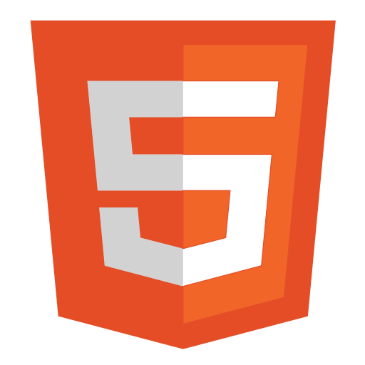
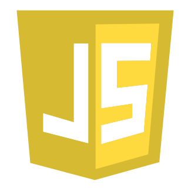

Selamat Datang Di TuPe
Dukungan :
 


TuPe adalah sebuah situs pengembang web dan aplikasi berbasis desktop, yang dimana TuPe akan mengajari kita berbagai macam materi khusus tentang bahasa pemrograman PHP. Istilah TuPe sendiri diambil dari akronim kalimat "Tutorial PHP."
TuPe memiliki fokus pada kesederhanaan dalam menyampaikan materi-materi. TuPe menggunakan penjelasan kode sederhana dan menggambarkan bagaimana menggunakannya. Tutorial mulai dari tingkat dasar hingga tingkat profesional.
TuPe menyediakan berbagai macam fitur seperti fitur belajar, quiz, dan berbagai fitur lain yang memungkinkan pengguna agar lebih mudah berinteraksi dan nyaman untuk belajar pada aplikasi ini. Fitur-fitur tersebut memiliki banyak kegunaan, salah satu contohnya fitur quiz yang mana nantinya fitur tersebut akan menyediakan daftar soal yang harus kita selesaikan.
Salah satu keunggulan TuPe adalah aplikasi ini merupakan aplikasi gratis yang dimana kami selaku pembuat akan selalu berupaya untuk selalu konsisten dalam memajukan dunia teknologi melalui pembuatan aplikasi-aplikasi yang bersifat gratis.